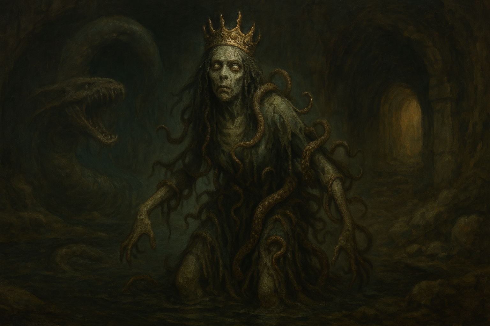

Chapter 2: Evangelist of Phynoir
The Cave of Drogsland

The Cave of Drogsland
15051.05.10
與怪物的激戰過後，冒險者們稍作休息。同時，Lott 陷入了一陣恐慌。在過去夥伴們犧牲的事件後，Lott 對觸肢等孽物般的特徵，便有非常不舒服的反應，因此當身上爬了三隻孽物的 GoR 和因興奮與好奇而變身為眼怪的 Ubba 都在他所屬的團隊內，再加上一口氣與四隻孽物作戰（儘管隱形的 Lott 幾乎沒有真正參與到戰鬥），這對他來說，都已經太多了。
趁著還隱形的狀態，Lott 趕緊躲到了附近的角落。他拿起 Ra’Leer 教他吹的笛子，不顧會暴露自己的行蹤，悠悠的吹了起來。音樂響起，曲終，妖精的魂魄飄了出來。儘管在過去這段日子，Lott 總會在夜深人靜時，偷溜到夥伴視線以外的地方，偷偷吹笛子，但其實 Ubbo 都有發現。妖精的魂魄和 Lott 來回著話語，Lott 抱怨著太多的孽物讓他感到不適，但又知道自己該忍下來。如同日常對話的內容，就好像 Lott 已經忘了自己和團隊們正在漆黑潮濕的地洞內一樣。
聽見 Lott 的笛子聲和對話聲，幻化成眼怪的 Ubbo 飄著，找到了 Lott 的位置，好奇的 GoR 也派了自己的孽物前去好好安慰 Lott，而這些當然也讓 Lott 更多恐慌與喪志。妖精魂魄趁著 Lott 無暇顧及自己時，迅速鑽回了笛子內。
在深淵語、惡魔語與普通語的夾雜下，現場如派對一般，嘈雜的同時，大多數內容……多數人其實都聽不懂。
冒險中就得繼續，因此大家狀況稍微穩定些後（在休息期間，Psyber 也幫看起來快要不行的 GoR 做了簡單的治療），準備繼續探洞。GoR 讓自己的三隻小孽物跟隨著 Ubbo 走，而三隻小孽物也像是找到了大哥一般，十分開心（又盲目）的跟隨著。
Ubbo、Kudan 和 Psyber 來到了地圖上 GoR 標記有「水」的空間，看見了在岩壁旁似乎有道小水溝，通往其他地方。然而，因為洞口太小，Ubbo 沒辦法通過，只有其中一隻小孽物鑽了進去，但好一陣子，還是都在黑暗之中，並沒有辦法從洞內鑽到外面或是其他空間，因此作罷。
同一時間，還在失神狀態的 Lott，在（身邊沒有小孽物的）GoR 陪伴下，走到了其他較為安全的空間內，暫時休息著，直到精神稍微回復後，再去與其他夥伴會合。
探索了幾個空間，Ubbo 等人也遇到了陷阱，但在小心謹慎的前提下，大家避開並解除了陷阱，繼續探險。
不久後，冒險者們似乎聽見了從他們下來的空間那兒，傳來了腳步聲。大家嘗試追上腳步聲，卻不見人影。跟隨著腳步聲移動的方向，他們發現其中幾扇門竟然是鎖著的。在 Lott 的專業下，多數的門都順利地被打開了，但偶爾還是有幾扇門較有蹊蹺—但在 GoR 說話之前，Ubbo 早已將門轟開，大家有就沒有障礙的繼續往前走了。當然也有些門是轟不開的，GoR 依照記憶，摸索到了石頭門邊的按鈕，輕輕一按，門就滑開了，Ubbo 也就興奮地繼續向前衝了。
來到了最後能聽到腳步聲的空間，冒險者們看見了在湖水中沈睡的一頭怪物：那頭怪物有著長長的身體，滿口的利齒，以及多而長的附肢。GoR 見過牠，也知道只要不打擾他，不會有事。冒險者們小心繞過怪物沈睡的湖邊，走到其他的出入口：而其中有個隱藏的門，竟然是 GoR 過去探洞時沒注意到的入口！
冒險者們在 Lott 將門打開後，走入一條又長又窄的廊道，只能容得下一個人的寬度。小心走著，走到前方後，是一扇金屬門，與地洞內十分不搭。門內似乎傳來了一個熟悉的女聲，說著他清楚，而且願意，緊接著則是這名女子的淒厲尖叫聲。
推開門後，冒險者們走進了一個像是診間的地方。一名貌似「護士」的孽物，彷彿不在意他們的存在，自顧自地在診間內移動，走到醫務櫃內找尋工具，不久後便先走回了廊道內。
冒險者們基於好奇，到了診間深處拉上布簾的空間。布簾拉開後，他們看見病床上躺著的，是當天早上還在酒館內服務他們的 Eva，面色蒼白，似乎已經昏厥了。更重要的是，在他頭上的，是一頂王冠，樣貌與 Lott 從雇主手上拿到的樣子一模一樣。
冒險者們趕緊從 Eva 頭上摘下王冠，卻也發現 Eva 的頭上留有像被牙齒咬過的血痕，鮮血不斷泌出。冒險者們趕緊用診間內現有的材料，為 Eva 簡單包紮。
同一時間，Ubbo 巡視了診間內的書籍，找到了其中一本令他感到有興趣的書：《芬諾爾傳道士製作手冊》，於是將它收了起來。
大家準備離開，但 GoR 對於把躺在病床上的 Eva 留在原地，感到十分糾結。在來到卓茲蘭後，GoR 每日都住在 Silence，每天看著新婚的 Eva 和 Jacob 為大家服務著，因此心中滿是糾葛。但為了團隊，他還是將這樣的情緒暫時拋在腦後，大家趕緊衝出診間，往廊道內走。
廊道的盡頭，門一打開，便看見了「護士」迎面而來。雖然沒有任何攻擊態勢，但他渾身散發著不安的氣息，冒險者們盡可能地避開，讓他能好整以暇地穿越廊道。
走回有怪物的空間，冒險者們小心翼翼的靠著牆邊走，然而最後剩下 Ubbo，因為沒有注意，驚醒了湖中的怪物。怪物顯然對 Ubbo 抱有一定程度的興趣，甚至作勢要襲擊他。
一來一回，時間滴滴答答過去，廊道的門再度被開啟。先前躺在病床上的 Eva，已站了起來，步履蹣跚的朝著 Ubbo 的方向前進，此刻的他雖然還能稱得上有著人的輪廓，但呆滯的眼神、觸肢爬滿的身軀，早已和冒險者們見過可人的酒館新婚太太完全不同了。Eva 口中呢喃著，用著月神的語言不斷讚美著，卻似乎不帶有什麼情緒。
為了避免和 Eva 或怪物的戰鬥，冒險者們千方百計，儘速逃離這個空間，Ubbo 也在危險之際成功逃走。
透過 Kudan 製造的次元門，冒險者們迅速傳送到了不遠處他們已知的洞穴空間內，暫時得以喘一口氣。
而此時，只出一張嘴的卓茲克爵士又說話了，內容當然都是一些風涼話。Kudan 也只能隨性聽著，思索著下一步該怎麼走。
該拿到的寶物已到手，任務可以算是完成了。接下來只需要離開這座洞穴，就能把寶物交給委託人，拿到承諾的錢了。Lott 如此想著。
而在 GoR 心中，他回想起昨晚做的夢，那個戴著王冠尖叫的面容，似乎與他今日所見雷同。預知的夢……是否對解開孽物的詛咒有所幫助呢？